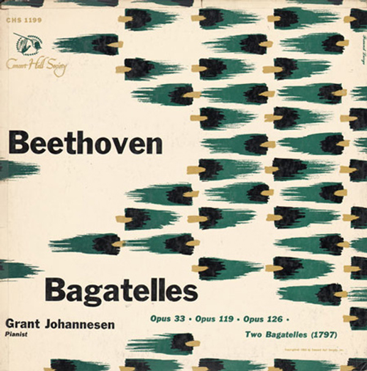
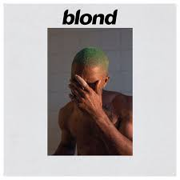
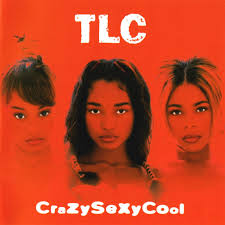
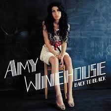
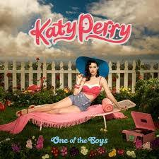
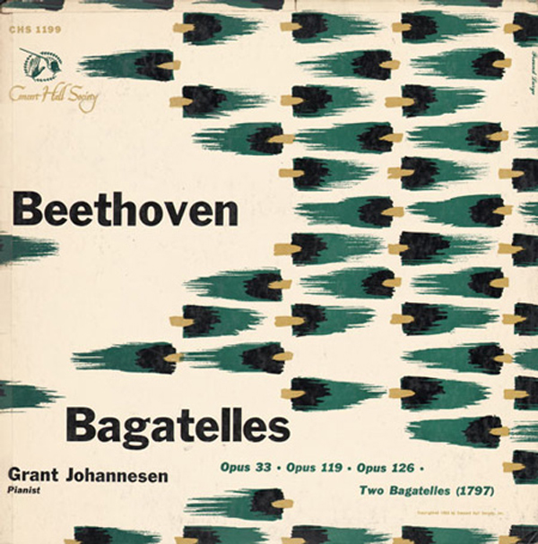
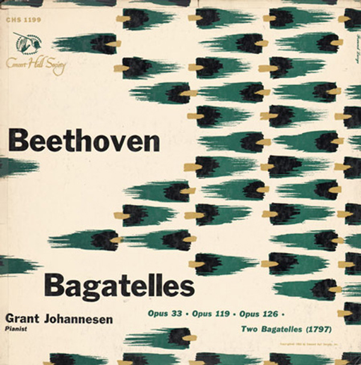
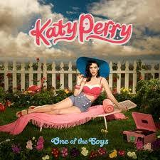
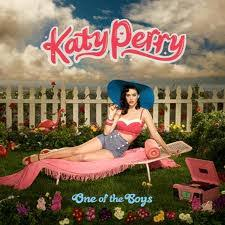

Music isn’t just a subject to study; it’s a journey through history itself.
Music is constantly evolving—but like any good remix, it never forgets its roots. From jazz riffs showing up in hip-hop beats to classical drama woven into cinematic pop, every genre borrows, blends, and builds off the ones before it. In this project, I’m exploring the DNA of music: how genres have shifted over time, gained popularity, and cross-pollinated with one another—yet still carry traces of their original essence. Because in the world of music, everything changes, but the rhythm of inspiration stays the same.
Classical
Emerged in 1820
Click me!
Classical music is the OG of organized sound—think sweeping symphonies, dramatic crescendos, and intricate harmonies. Born in 18th-century Europe, it set the foundation for Western music with legendary composers like Mozart, Beethoven, and Bach leading the charge. While it may not dominate Spotify charts today, its influence echoes through movie scores, pop ballads, and even video game soundtracks. Timeless, technical, and totally dramatic—classical music is proof that good composition never goes out of style.

Blues
Emerged in 1860
Blues is raw emotion turned into rhythm—born from the deep South in the late 1800s, it gave a voice to struggle, soul, and storytelling. With its signature 12-bar structure, moody guitar riffs, and heartfelt lyrics, blues laid the groundwork for genres like rock, jazz, and hip-hop. It's the kind of music that says a lot with just a few notes—and somehow, it always hits you right in the feels. Simple, soulful, and seriously influential, blues is the heartache that built a music empire.
Jazz
Emerged in 1910
Jazz is music with a mind of its own—improvised, unpredictable, and always cool. Born in the 1920s in New Orleans, jazz blended blues, ragtime, and classical flair into something bold and brand new. It’s known for swing rhythms, soulful solos, and that “you had to be there†kind of energy. From smoky clubs to symphony halls, jazz pushed boundaries and redefined what music could be. It doesn’t just follow the rules—it rewrites them in real time.
Country
Emerged in 1920
Country music is all about stories—tales of love, heartbreak, hometowns, and highways. Born in the American South in the 1920s, it mixes folk roots, bluesy twang, and a whole lot of heart. With acoustic guitars, fiddles, and that signature Southern drawl, country music turns everyday moments into sing-along anthems. Whether you're two-stepping in a honky-tonk or crying in your truck, country keeps it real, raw, and relatable. Boots optional, feelings guaranteed.
Swing
Emerged in 1930
Swing is jazz’s lively, dance-obsessed cousin. Bursting onto the scene in the 1930s and ‘40s, swing brought big bands, bold brass sections, and infectious rhythms that got everyone on their feet. With its bouncy beat and smooth style, swing music ruled dance halls and airwaves, setting the stage for everything from bebop to early rock ‘n’ roll. It’s music made to move to—slick, stylish, and impossible to sit still through.
R&B
Emerged in 1940
R&B is the sound of groove and emotion coming together. Emerging in the 1940s, it fused jazz, gospel, and blues into something silky, heartfelt, and full of rhythm. Over the decades, R&B has evolved from doo-wop and soul to contemporary hits that blend seamlessly with pop, hip-hop, and electronic beats. With smooth vocals, steady beats, and lyrics that speak to love, heartbreak, and everything in between


Pop
Emerged in 1950
Pop is music’s ultimate crowd-pleaser—catchy, colorful, and constantly evolving. Short for “popular,†pop pulls bits and pieces from every genre (think rock, R&B, hip-hop, even country!) to create songs that get stuck in your head—in the best way. With sing-along hooks, polished production, and a flair for reinvention, pop has dominated charts and dance floors for decades. It’s the sound of the moment—and sometimes, the whole generation.


Rock ’n Roll
Emerged in 1950
Rebellion in rhythm. Rock ’n roll fused blues, country, and swagger into a cultural force that redefined youth, fashion, and volume itself. With electric guitars, pounding drums, and unforgettable hooks, it gave us anthems for generations. Born in the 1950s, it inspired social change, soundtracked revolutions, and carved out legends—from Elvis to punk and grunge. Rock isn’t just a sound—it’s a spirit that shouts back at the world.
Soul
Emerged in 1960
Soul music originated in the 1950s and 60s, blending gospel’s emotional power, blues’ raw storytelling, and jazz’s musical complexity. It drew from rhythm and blues to create a sound that was deeply expressive and culturally rooted. Influenced by these genres, soul became a powerful voice for love, struggle, and identity.
Disco
Emerged in 1970
Born in dance clubs, disco music, inspired by funk’s groove, soul’s emotion, and Latin music’s rhythm. It combined upbeat tempos, lush orchestration, and danceable beats to create a vibrant club sound. Born in underground dance scenes, disco celebrated freedom, diversity, and self-expression, leaving a lasting impact on pop and electronic music.
Punk
Emerged in 1974
Punk began in the mid-1970s as a rebellious reaction to mainstream rock, drawing influence from garage rock’s raw sound and the DIY spirit of early rock ’n’ roll. It stripped music down to fast, loud, and aggressive essentials, often with political or anti-establishment lyrics. Punk inspired a cultural movement built on individuality, resistance, and simplicity.
Hip Hop
Emerged in 1973
From block parties to global stages, Hip hop originated in the Bronx during the 1970s, influenced by funk, soul, and disco. It began as a cultural movement with DJing, rapping, breakdancing, and graffiti at its core. Drawing from rhythmic beats and spoken word, hip hop gave voice to urban youth and evolved into a global force, blending storytelling, rhythm, and innovation.
EDM and Techno
Emerged in 1980
Techno, a key branch of EDM (Electronic Dance Music), influenced by funk, synthpop, and German electronic music like Kraftwerk. It features repetitive beats, synthesized sounds, and minimal vocals, designed for immersive dance floor experiences. Rooted in innovation and technology, techno helped shape global electronic music culture.

 



 
